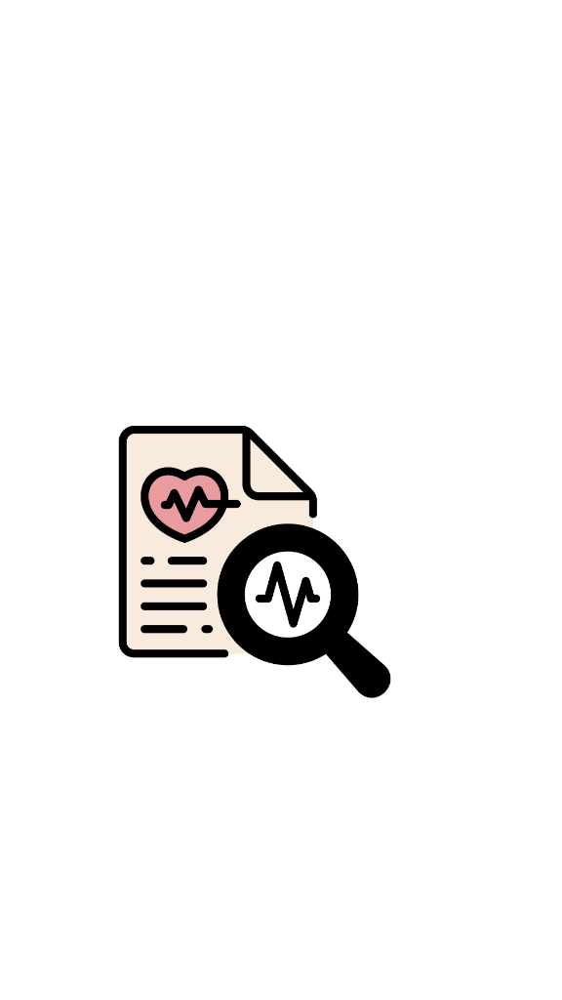
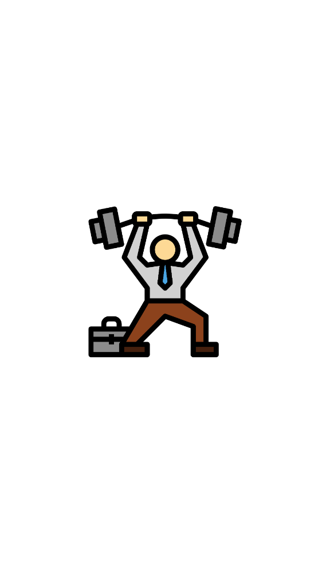
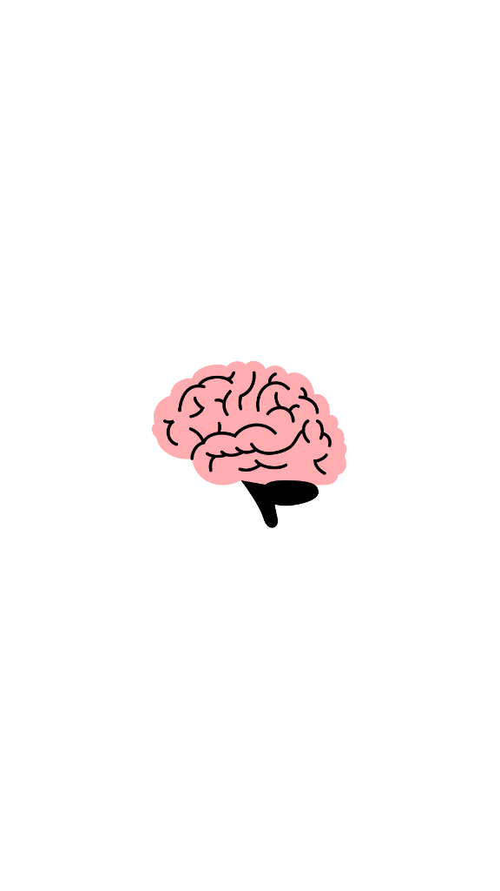

Ayudamos a las organizaciones a identificar, prevenir y atender los riesgos psicológicos que afectan el bienestar, el liderazgo y el desempeño.
Integramos psicología clínica, neurociencia y estrategia organizacional mediante un modelo que convierte las necesidades de cada empresa en intervenciones medibles.

Evaluación de clima emocional, riesgos psicosociales, estrés, burnout y necesidades específicas de líderes y equipos.

Talleres y programas personalizados sobre salud mental, regulación del estrés, comunicación, resiliencia y prevención del agotamiento laboral.
Atención psicológica individual, manejo de crisis emocionales, acompañamiento de casos de alto riesgo y diseño de protocolos internos.

Programas para líderes, coaching especializado, gestión de conflictos y fortalecimiento de equipos que trabajan bajo presión.
Programe una consulta para diseñar un programa de bienestar corporativo adaptado a las necesidades reales de su organización.